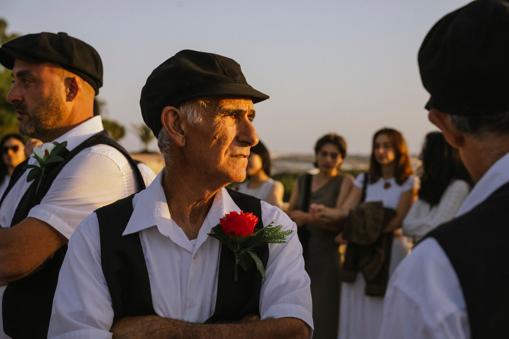

Festivals · Culture
Festgħana 2027
- Dates
- –
- Location
- Floriana, Malta
- Format
- In-person
- Category
- Culture
- Industry
- Traditional folk-song festival
- Organiser
- Festivals Malta
- Official website
- https://www.festivals.mt/festghana
About
Dates are local to the host city (Central European Time, UTC+1 / UTC+2 in summer).
Topics: għana, Maltese folk music, UNESCO intangible heritage.
No organiser attendance figure found on the official pages fetched 24 Nov 2026. Ranked by our estimated size tier 'medium' (10,000-30,000 attendees/visits), a judgement from format, venue and scale, not an official number.
Sources
Hotels
- Grand Hotel Excelsior — 5★ · Great Siege Road, Floriana FRN 1810, Malta · 0.5 km from the venue · Price on request · Venue page
- The Phoenicia Malta — 5★ · The Mall, Floriana FRN 1478, Malta · 0.3 km from the venue · Price on request · Venue page
- Rosselli AX Privilege — 5★ · 167 Merchants Street, Valletta VLT 1174, Malta · 1.1 km from the venue · Price on request
- Palais Le Brun — 4★ · 101 Old Bakery Street, Valletta, Malta · 1.2 km from the venue · Price on request
- The Embassy Valletta Hotel — 4★ · 173 Strait Street, Valletta VLT 1435, Malta · 0.9 km from the venue · Price on request